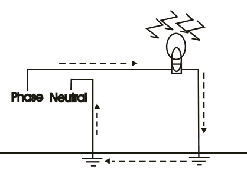

A circuit carries current only when it is completed or forms a closed circuit. Current needs a return path, most of the time ground wire is used as the return path. We know that the potential of earth is infinite. So, if we connect any energized circuit to the ground, then the ground acts like the neutral path and completes the circuit by acting as a return path. Now there are mainly two types of earthing namely:
- Functional earth.
- Protective earth.

Functional earthing is that type of earthing where ground is used as the return path or as a terminal for the circuit. This type of earthing is seen at many applications. The main advantage of this type of earthing is that in this type of earthing the cost of neutral wire is minimized.
Another type of earthing, which is very essential for safety purpose is protective earthing. Suppose, a normal wiring is done inside an electrical equipment and the body of the equipment is made of metal, then there is a chance that the bare wire can come in touch with the body. Therefore, there is a risk of getting shocked whenever someone touches the equipment. So, to prevent this risk a wire is connected with the body of the equipment and the another terminal is connected with the ground so that if ever the above condition arises then the current passes to the ground directly without injuring anybody. So grounding or earthing is very necessary in electrical power system.
 by
by